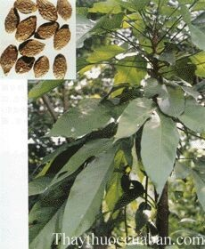

Tên khác
Tên thường gọi: Bàng đại hải tên gọi khác là lười ươi, đười ươi, đại hải tử, sam rang, dang rang si phlè, som vang, an nam tử, đại đồng quả, đại phát, tam bayang.
Tên khoa học Sterculia lychonophora Hnce.
Tên thực vật: Sterculia Lych nophera Hance
Họ khoa học: Thuộc Trôm Sterculiaceae.
Cây bàng đại hải
(Mô tả, hình ảnh cây bàng đại hải phân bố, thu hái, thành phần hóa học, tác dụng dược lý...)

Mô tả cây
Cây bàng đại hảilà một cây thuốc quý. bàng đại hảilà một cây to, cao 30-40m, thân có thể cao 10-20m mà chưa phân nhánh, đường kính thanh 0.8-1m. Lá đơn, nguyên hay xẻ thùy, mặt trên màu lục, mặt dưới nâu hay ánh bạc, dàu 18-45m, rộng 18-24cm, cuống dài. Hoa nhỏ, không cuống, họp từng 3-5 thành chùy ở đầu cành. Mỗi hoa cho 1-2 quả đại, dạng lá,hình trứng hay hình giống như đèn treo, do đó có tên lychophor, dài 12-16cm, rộng 4-5cm ở phần rộng nhất của phía dưới quả. Màu đỏ hay màu nhạt, mặt trong ánh bạc, với 4-5 đường gân nổi rõ. Một hại dài 2.5cm, rộng 14-16mm, dày 5-7mm. Thịt quả gồm 3 lớp: Lớp ngoài mỏng, lớp giữa dầy mẫm, gồm những tế bào họp thành chuỗi chứa chất nhầy, lớp trong nhẵn và màu trắng nhạt. Lá xuất hiện vào tháng 3-4 và rụng vào tháng 1, hoa xuất hiện vào tháng 3-4 trước khi lá phát triển. Quả xuất hiện vào cuối tháng 4 đầu tháng 5 và mở ra trước khi hạt chín. Khi chín quả đại tách ra, hạt còn lại thường nhầm là quả, có hai cánh, thực tế chỉ là hai thùy dạng lá của quả đại
Phân bố, thu hái và chế biến
bàng đại hảichỉ mới thấy phân bố và được sử dụng khai thác ở miền nam nước ta tại những vùng Biên Hòa, Bà Rịa, Bình Định, Bình Thuận... Ngoài ra còn thấy ở Cămpuchia, Thái Lan, các đảo thuốc Malaixya
Vào tháng 4-5, người ta thu hoạch hạt, phơi hay sấy khô. Hạt hình trứng dài 2.5-3.5cm, rộng 1.2-2.5cm, màu nâu đỏ nhạt, trên mặt nhăn nheo, nổi trên nước, nhưng khi ngâm với nước thì sau một thời gian nở rất to, gấp 8-10 lần thể tích của hạt, thành một chất nhầy màu nâu nhạt, vị hơi chát, mát, do đó Châu Âu gọi là Hạt nở
Hạt được khai thác rất nhiều ở miền Nam để dùng tại chỗ và xuất khẩu.
Thành phần hoá học
Hạt lười ười gồm hai phần: Phần nhân chiếm khoảng 35% và phần vỏ chiếm khoảng 65%. Trong nhân có chất béo, tinh bột và chất đắng. Trong vỏ có khoảng 1% chất béo, 59% bassorin, chất nhầy và tamin.
Phần đường trong hạt gồm chủ yếu galactoza, pentoza và arabinoza.
Tác dụng dược lý
Thuốc uống vào hút nước rất mạnh làm trương ruột kích thích gây tiêu chảy.
Thuốc có tác dụng hạ áp, lợi tiểu, giảm đau.
Vị thuốc lười ươi
(Công dụng, liều dùng, quy kinh, tính vị...)
Tính vị:
bàng đại hảivị ngọt, tính hàn.
Sách Bản thảo cương mục thập di: ngọt nhạt.
Sách Dược liệu hội biên: ngọt nhạt tính lương.
Quy kinh:
Qui kinh Phế, Đại tràng.
Công dụng:
Thanh nhiệt, trừ khí ở phế, nhuận tràng.
Hiện nay công dụng chủ yếu của vị thuốc này là mát và nhuận. Chỉ cần 4-5 hạt vào một lít nước là đủ có một thứ nước sền sệt như thạch, thêm đường vào mà uống trong trường hợp ho khan không đờm, cổ họng sưng đau, viêm đường tiết niệu ngày dùng 2-5 hạt, cho vào cốc nước nóng, chờ một lúc cho hạt nở ra, thêm đường vào cho đủ ngọt chia nhiều lần uồng trong ngày.
Liều dùng:
Liều dùng 3 - 5 quả bỏ vào nước sôi uống hoặc sắc uống.
Liều dùng dưới dạng bột giảm đi một nửa.
Ứng dụng lâm sàng của vị thuốc bàng đại hải
Trị viêm amidale cấp:
Dùng 4 - 8 quả cho vào bình trà, đổ nước sôi vào uống hết sau khi ngâm nửa giờ, cách 4 giờ 1 lần, trong 2 - 3 ngày. Trị khỏi 68 ca, tốt 21 ca (Lưu phúc Bình, Tạp chí Trung y Triết giang 1966, 5:180).
Trị đau họng, ho khan không có đờm, khàn tiếng, cốt chưng nội nhiệt, chảy máu cam:
bàng đại hải3 hạt, mật ong 15ml. Hãm với nước sôi uống thay trà.
Trị chảy máu cam ở trẻ nhỏ:
bàng đại hải2-5 hạt sao vàng, nấu lấy nước cho trẻ uống trong ngày.
Táo bón do tích nhiệt:
Dùng Bàng đại hải dưới dạng hãm hoặc phối hợp với các dược liệu nhuận tràng khác.
Tham khảo
Lưu ý khi dùng
Không dùng kéo dài
Tiểu chảy không dùng
Tag; caybang dai hai, vi thuocbang dai hai, tac dung cuabang dai hai, cong dung cuabang dai hai, thuoc nam
Cảnh báo những thực phẩm gây độc khi dùng chung
Viêm họng, viêm phế quản mãn tính khỏi dứt điểm sau 2 tháng
Nơi mua bán vị thuốc BÀNG ĐẠI HẢI đạt chất lượng ở đâu?
Trước thực trạng thuốc đông dược kém chất lượng, nguồn gốc không rõ ràng,... xuất hiện tràn lan trên thị trường, làm ảnh hưởng tới hiệu quả điều trị cũng như ảnh hưởng tới sức khỏe của bệnh nhân. Việc lựa chọn những địa chỉ uy tín để mua thuốc đông dược là rất quan trọng và cần thiết. Vậy khách hàng có thể mua vị thuốc BÀNG ĐẠI HẢI ở đâu?
BÀNG ĐẠI HẢI là vị thuốc nam quý, được sử dụng rộng rãi trong YHCT. Hiện tại hầu hết các cửa hàng thuốc đông dược, phòng khám đông y, phòng chẩn trị YHCT... đều có bán vị thuốc này. Tuy nhiên người mua nên chọn những địa chỉ có uy tín, đảm bảo chất lượng, có giấy phép hoạt động để mua được vị thuốc đạt chất lượng.
Với mong muốn bệnh nhân được sử dụng những loại dược liệu đúng, chất lượng tốt, phòng khám Đông y Nguyễn Hữu Toàn không chỉ là đia chỉ khám chữa bệnh tin cậy, uy tín chất lượng mà còn cung cấp cho khách hàng những vị thuốc đông y (thuốc nam, thuốc bắc) đúng, chuẩn, đạt chuẩn chất lượng. Các vị thuốc có trong tiêu chuẩn Dược điển Việt Nam đều được nghành y tế kiểm nghiệm đạt chất lượng tiêu chuẩn.
Vị thuốc BÀNG ĐẠI HẢI được bán tại Phòng khám là thuốc đã được bào chế theo Tiêu chuẩn NHT.
Giá bán vị thuốc BÀNG ĐẠI HẢI tại Phòng khám Đông y Nguyễn Hữu Toàn: Gọi 18006834 để biết chi tiết
Tùy theo thời điểm giá bán có thể thay đổi.
+ Khách hàng có thể mua trực tiếp tại địa chỉ phòng khám: Cơ sở 1: Số 481 lô 22 Lê Hồng Phong, Phường Gia Viên, Thành phố Hải Phòng
+ Mua trực tuyến: Thuốc được chuyển qua đường bưu điện. Khi nhận được thuốc khách hàng thanh toán tiền COD.
Tag: cay bang dai hai, vi thuoc bang dai hai, cong dung bang dai hai, Hinh anh cay bang dai hai, Tac dung bang dai hai, Thuoc nam
Thaythuoccuaban.com Tổng hợp
*************************